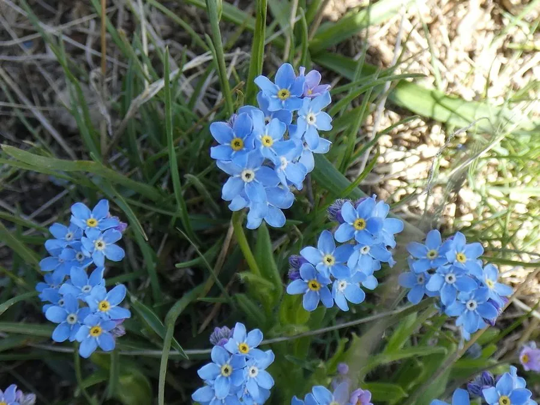

花卉与草本 · 植物界
勿忘我 Myosotis alpestris

紫草科多年生草本，蓝色小花密集成簇，花语为“勿忘我”，是表达思念的经典花卉，原产欧洲高山地区。
- 分类
- 门被子植物门纲木兰纲目紫草目科紫草科属勿忘我属
- 栖息环境
- 欧洲高山的草甸与林缘，喜凉爽、湿润、半阴
- 地理分布
- 原产欧洲山地，世界温带地区广泛栽培，中国北方有引种
- 保护级别
- 暂无评估
物种志
勿忘我为紫草科勿忘我属多年生草本，株高 15–30 厘米，全株被柔毛。叶片基生和互生，长椭圆形至匙形。聚伞花序呈螺旋状弯曲，花小，直径 5–8 毫米，花冠 5 裂，天蓝色，喉部有黄色小孔，花期 5–6 月；果实为小坚果。
勿忘我原产欧洲阿尔卑斯山等高寒地区，喜凉爽、湿润和半阴的环境，耐寒性较强，忌高温和积水。它的蓝色小花密集如云，常成片生长在高山草甸和林缘。在欧洲，勿忘我象征忠贞与思念，流传着骑士与恋人的美丽传说；花枝剪下后可制作干花，也能作花束的配材。栽培以播种为主，适合布置花境、岩石园和盆花，也可成片种于林下。
形态与习性
- 株高15–30 厘米，全株被柔毛
- 花期5–6 月，小花天蓝色
- 果期花后结小坚果
- 光照喜半阴散射光，忌强光暴晒
- 水分喜湿润，忌积水
- 土壤疏松肥沃、富含腐殖质的壤土
- 繁殖以播种为主
- 主要用途花束配材、干花、岩石园观赏
趣味知识
- 勿忘我的花语是“不要忘记我”，是表达思念与忠贞的经典花卉。
- 它的聚伞花序呈螺旋状弯曲，小花沿一侧依次开放。
- 花冠天蓝色、喉部有黄色小孔，是识别勿忘我的重要特征。
- 花枝剪下倒挂阴干后可作干花，也常作花束的配材。